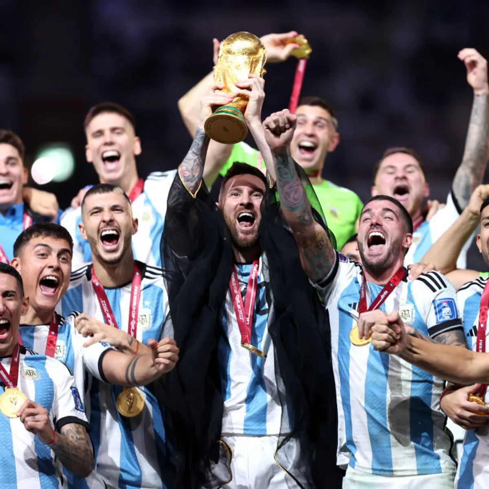

CAMINO AL EXITO
Argentina 1-2 Arabia Saudí
En su debut, la Albiceleste fue sorprendida por el buen equipo asiático que cortó su extenso invicto con una ráfaga en el segundo tiempo. La sólida estructura que había conformado Lionel Scaloni tambaleó por un momento, pero no se derrumbaría. "Confíen, que no los vamos a dejar tirados", dijo Messi.
Argentina 2-0 México
Fue la primera prueba de fuego en la Copa Mundial para los campeones de América, ya sin margen de error. En caso de perder, Argentina quedaría eliminada, pero Messi tenía otros planes. El capitán abrió el camino del triunfo con un zurdazo desde la puerta del área y, poco más tarde, Enzo Fernández liquidó la historia con otro gran gol después de una brillante maniobra individual.
Polonia 0-2 Argentina
El mejor partido de La Scaloneta en la fase de grupos. Los sudamericanos controlaron las acciones de principio a fin, no le dieron chances a Robert Lewandowski y pudieron haber hecho más goles. Después de que Messi desperdiciara un penal en la primera mitad, aparecieron Alexis Mac Allister y Julián Álvarez para redondear una victoria sin atenuantes.
Argentina 2-1 Australia
Otra función emocionante de Messi, que se puso el equipo al hombro cuando el trámite se complicaba, abrió el encuentro con un gol típico de su repertorio y luego manejó los tiempos a su gusto. Álvarez, ya consolidado como titular, marcó el segundo antes del descuento de los Socceroos. Sobre el final, apareció la figura de Emiliano Martínez para sostener el resultado.
Países Bajos 2 (3) - 2 (4) Argentina
En un partido que Argentina había controlado sin mayores inconvenientes y que ganaba 2-0 con goles de Nahuel Molina y de Messi de penal, la agónica reacción neerlandesa propició que hubiera alargue y penales. En la definición, el especialista Dibu Martínez brilló y detuvo dos remates para asegurar la clasificación. El duelo se había tornado caliente por las declaraciones previas de Louis van Gaal y tuvo mucha fricción y cruces dialécticos hasta el final.
Argentina 3-0 Croacia
El encuentro de semifinales resultó mucho menos complejo de lo esperado para la Albiceleste. Después de un rato en el que le costó hallarse en el campo, el equipo de Scaloni encontró los huecos para atacar, metió dos goles en una seguidilla y se fue al descanso con una ventaja ya indescontable para los croatas. En el complemento, casi no hubo sufrimiento para los finalistas, que se impusieron 3-0 con dos tantos de Álvarez y otro de penal de un sensacional Messi.
Argentina 3 (4) - 3 (2) Francia
La Final de la Copa Mundial estuvo a la altura de los dos mejores equipos del torneo. Hubo un claro dominio de Argentina en el primer tiempo, una reacción francesa en la segunda mitad, excelentes rendimientos de Lionel Messi y Kylian Mbappé, más emociones en el alargue y una atrapante definición por penales. La Albiceleste prevaleció desde los 11 metros y se quedó con el título en Catar.
